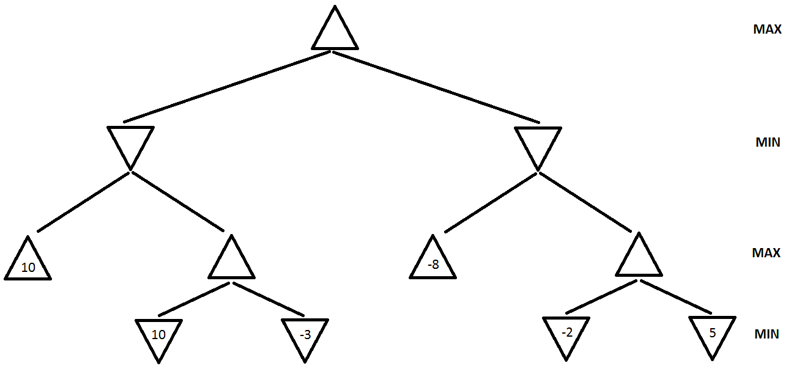

Consider the following three variants of minimax: the simple version, alpha-beta search, and depth-limited search, and consider the games of tic-tac-toe and chess. For each combination of minimax variant and game, answer the following question: can that minimax variant possibly never terminate, in computing the best next move? Justify your answer.
For chess, assume that the rules do not impose any limit on the total number of moves in a game.
| X | O | |
| O | X | |
| X | O |
Consider the tic-tac-toe board state shown in Figure 1. Draw the full minimax search tree starting from this state, and ending in terminal nodes. Show the utility value for each terminal and non-terminal node. Utility values are +1 if X wins, 0 for a tie, and -1 if O wins. Assume that X makes the next move (X is the MAX player).

Figure 2. A game search tree.
a. (10 points) In the game search tree of Figure 2, indicate what nodes will be pruned using alpha-beta search, and what the estimated utility values are for the rest of the nodes. Assume that, when given a choice, alpha-beta search expands nodes in a left-to-right order. Also, assume the MAX player plays first.
b. (10 points) This question is also on the game search tree of Figure 2. Suppose we are given some additional knowledge about the game: the maximum utility value is 10, i.e., it is not mathematically possible for the MAX player to get an outcome greater than 10. How can this knowledge be used to further improve the efficiency of alpha-beta search? Indicate the nodes that will be pruned using this improvement. Again, assume that, when given a choice, alpha-beta search expands nodes in a left-to-right order, and that the MAX player plays first.
Suppose that two computer algorithms A and B are playing tic-tac-toe against each other. Algorithm A is plain minimax search.
a. (5 points). If algorithm B is also plain minimax, does algorithm A always follow the best possible strategy?
b. (5 points). Can you make up an algorithm B for which algorithm A (i.e., plain minimax) does not find the best possible strategy? I.e., can you make up an algorithm B such that, if the designers of A knew that their opponent uses this algorithm B, the designers of A could replace minimax with a better strategy?
Consider the MINIMAX tree above. Suppose that we are the MAX player, and we follow the MINIMAX algorithm to play a full game against an opponent. However, we do not know what algorithm the opponent uses.
Under these conditions, what is the best possible outcome of playing the full game for the MAX player? What is the worst possible outcome for the MAX player? Justify your answer.
NOTE:
the question is not asking you about what MINIMAX will compute for the
start node. It is asking you what is the best and worst outcome of a complete
game under
the assumptions stated above.
Write an algorithm in pseudocode (following the style of the Minimax pseudocode) that will always make an optimal decision given the knowledge we have about DeepGreen. You are free to use the library function DeepGreenMove(S) in your pseudocode. If you think regular Minimax is the answer, just state so.